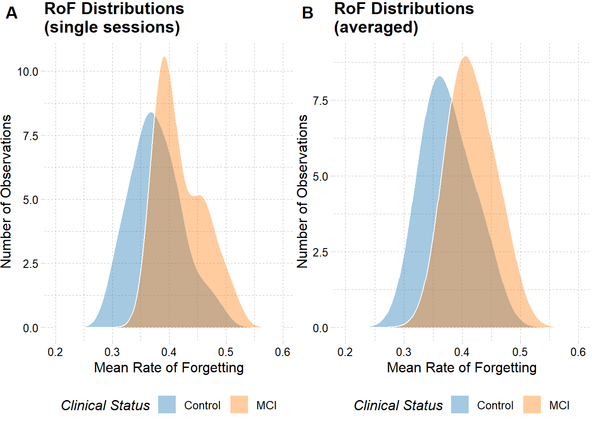
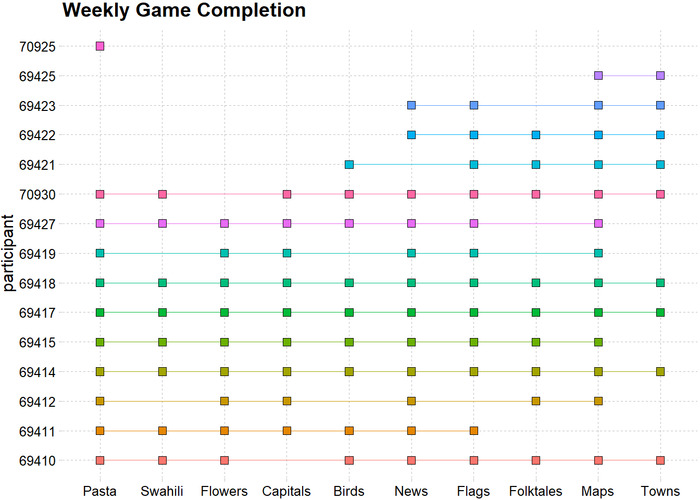

3 Results
## `summarise()` has grouped output by 'userId', 'lessonTitle', 'lessonId'. You
## can override using the `.groups` argument.
## `summarise()` has grouped output by 'lessonId', 'userId'. You can override
## using the `.groups` argument.
## Joining, by = c("userId", "lessonId", "sessionId")
## `summarise()` has grouped output by 'userId', 'lessonTitle'. You can override
## using the `.groups` argument.
## `summarise()` has grouped output by 'userId', 'sessionId', 'lessonId'. You can
## override using the `.groups` argument.
## Joining, by = c("userId", "sessionId", "lessonId", "lessonTitle", "duration",
## "start", "legit", "sessionRank")
## Joining, by = "userId"
## Joining, by = c("userId", "lessonTitle", "lessonId", "sessionId")
## `summarise()` has grouped output by 'lessonTitle'. You can override using the
## `.groups` argument.3.1 Accuracy
The averaged accuracy for each participant across all lessons.
This graph lets you interact with the data points to get a better look at the accuracy scores for each of the individual subjects.
This graph separates the subjects by clinical status.
3.2 Rate of Forgetting
The averaged Rate of Forgetting for each participant across all lessons.
## Warning: Removed 2 rows containing non-finite values (stat_ydensity).## Warning: position_dodge requires non-overlapping x intervals## Warning: Removed 2 rows containing missing values (geom_point).
As you can see, individuals with Mild Cognitive Impairment (MCIs) tend to have a higher Rate of Forgetting than the age-matched controls.
## Warning: Computation failed in `stat_summary()`: